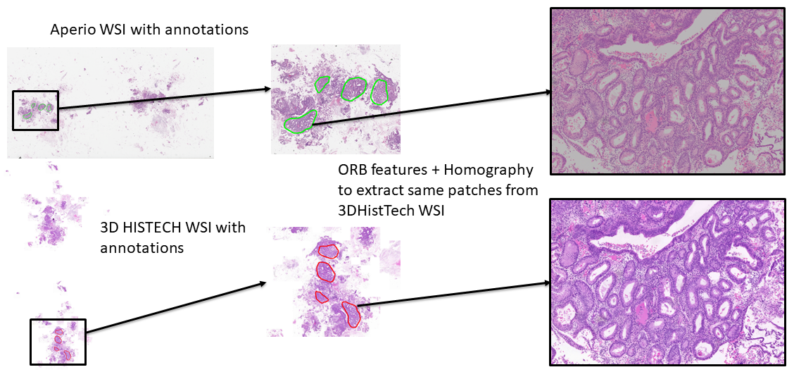

Tissue Registration
WSI.tissue_registration module
Created on Wed Apr 2 13:50:13 2025
@author: Tanviben.Patel
- class WSI.tissue_registration.tissue_registration(aperio_path, histech_path, xml_path, output_base)[source]
Bases:
objectA class for performing tissue registration and annotation transfer between Whole Slide Images (WSIs) from different scanners (e.g., Aperio and Histech).
This includes registration via ORB features, annotation parsing and mapping, and patch extraction for downstream analysis.
- __init__(aperio_path, histech_path, xml_path, output_base)[source]
Initialize the registration pipeline.
Parameters
- aperio_pathstr
Path to the Aperio slide (.svs).
- histech_pathstr
Path to the Histech slide (.svs).
- xml_pathstr
Path to the Aperio XML annotation file.
- output_basestr
Base directory to save output folders and visualizations.
- crop_polygon(slide, polygon, pad=0)[source]
Crop a rectangular region that bounds a polygon.
Parameters
- slideOpenSlide or TiffSlide
Slide to crop from.
- polygonndarray
Polygon coordinates.
- padint, optional
Padding around the polygon (default is 0).
Returns
- regionPIL.Image
Cropped image region.
- origintuple
Top-left coordinate of the cropped region.
- load_level_image(slide, level=2)[source]
Load an image from a specific resolution level of a WSI.
Parameters
- slideOpenSlide or TiffSlide
Slide object to load from.
- levelint, optional
Resolution level to load (default is 2).
Returns
- imagendarray
Image array at the specified level.
- downsamplefloat
Downsampling factor relative to level 0.
- map_coords(coords, H, scale_from, scale_to)[source]
Apply homography and scale transformation to polygon coordinates.
Parameters
- coordsndarray
Original polygon coordinates.
- Hndarray
Homography matrix.
- scale_fromfloat
Source scale factor.
- scale_tofloat
Target scale factor.
Returns
- coords_transformedndarray
Transformed and scaled coordinates.
- parse_xml()[source]
Parse Aperio XML annotations to extract region coordinates.
Returns
- annotationslist of ndarray
List of polygon coordinate arrays.
- register_orb(moving_img, fixed_img)[source]
Register two images using ORB feature detection and matching.
Parameters
- moving_imgndarray
Source image to be aligned.
- fixed_imgndarray
Reference image.
Returns
- Hndarray
Estimated homography matrix (3x3).
- run()[source]
Run the full tissue registration and patch extraction pipeline.
This includes: - Loading thumbnails - Computing homography using ORB - Parsing XML annotations - Mapping annotations - Extracting and saving patches - Drawing annotated thumbnails - Saving visualizations
- show_annotated_thumbnails(aperio_filename='aperio_annotated_thumb.png', histech_filename='histech_registered_thumb.png')[source]
Display annotated thumbnails of Aperio and Histech slides side by side.
Parameters
- aperio_filenamestr
Filename of the Aperio annotated thumbnail.
- histech_filenamestr
Filename of the Histech annotated thumbnail.
About this module
This module enables tissue registration and annotation transfer between Whole Slide Images (WSIs) scanned by different devices (e.g., Aperio and Histech). It uses ORB-based image registration and homography mapping to align annotations and extract corresponding regions.
The key class is tissue_registration, which contains all logic to perform: - ORB-based alignment - Annotation transformation via XML parsing - Patch extraction - Registration visualization
{kind=link}
Loading Required Packages
from WSI.tissue_registration import tissue_registration
You’ll need to install the following packages:
pip install openslide-python tiffslide lxml opencv-python-headless
Input Structure
To use the tissue_registration module, prepare the following files:
Aperio Whole Slide Image (WSI): typically a .svs file from Aperio scanner.
Histech Whole Slide Image (WSI): typically a .svs file from Histech scanner.
Aperio XML annotation file: contains region-level annotations that need to be transferred to Histech image space.
These inputs are used to align slides from different scanners and propagate annotations across them.
Define the paths and output directory:
from registration import tissue_registration
reg = tissue_registration(
aperio_path="slides/Aperio1.svs",
histech_path="slides/Histech1.svs",
xml_path="annotations/Aperio1.xml",
output_base="output/registration/"
)
Make sure that the output_base directory exists or will be created, as it is used to store visual results and annotation outputs.
Running the Pipeline
To perform the full registration and annotation transfer process, use the .run() method:
reg.run()
This method executes the following sequence:
Load WSIs and extract level-2 thumbnails for faster processing.
Detect ORB keypoints and compute descriptors in both Aperio and Histech images.
Estimate homography to map Aperio coordinates into Histech space.
Parse Aperio XML annotation file to get annotated regions.
Transform annotations to match the coordinate system of Histech WSI.
Extract tissue patches around the transformed annotations.
Generate visual overlays showing registration alignment and transferred annotations.
Save updated XML containing mapped annotations compatible with Histech image.
Visualizing the Results
After running the pipeline, you can visualize the thumbnails with overlaid annotations:
reg.show_annotated_thumbnails()
{kind=link}
To view paired extracted patches side by side:
reg.show_registered_patches(max_pairs=2)
{kind=link}
Outputs
After running .run(), your output_base directory will contain:
/aperio_patches: Aligned patches extracted from Aperio WSI
/histech_patches: Corresponding patches extracted from Histech WSI
/visualizations: Annotated thumbnails and overlays
—
### Notes: - Ensure all WSIs and XML annotations are correctly paired and accessible. - Level 2 thumbnails are used for registration to speed up ORB computation.